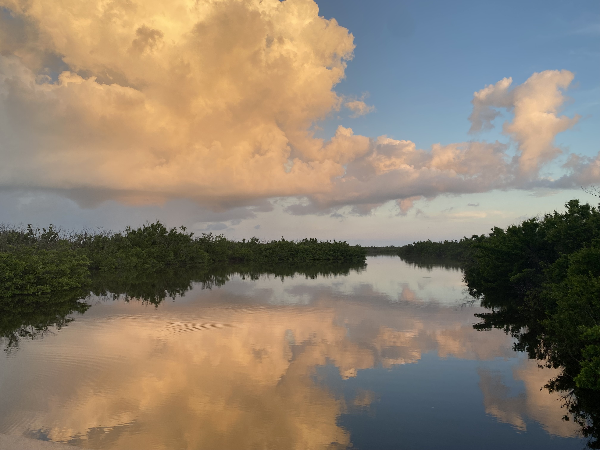
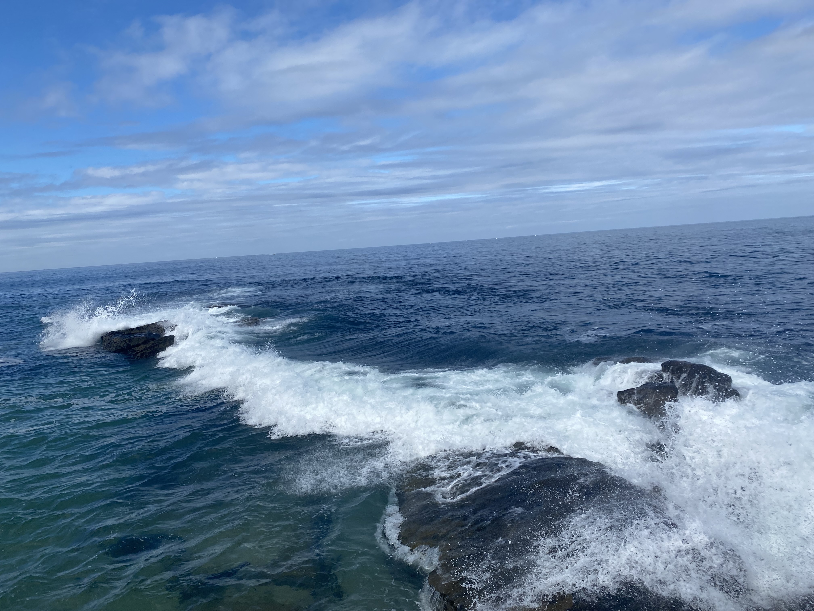
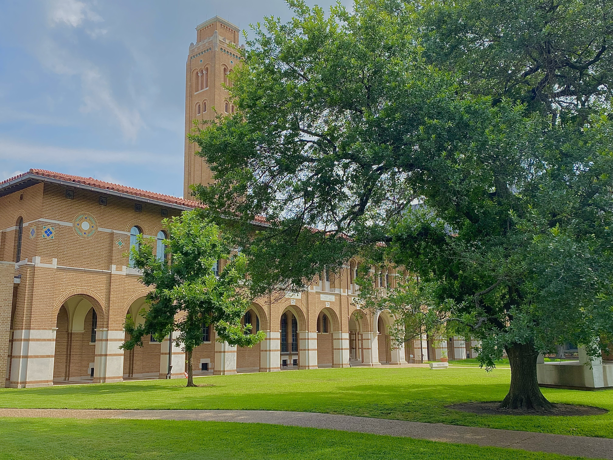

Research
Overarching Research Interests
Sports Analytics

Environmental Protection

Political Security
Bayesian Methodologies

Spatio-Temporal Analysis
Pedagogy
In Progress
- Graves, R., Powers, S., Glazer, A., Vannucci, M. (2026+). "Bayesian Hierarchical Change Point Models for Pitcher Biomechanics". In preparation.
- Glazer, A., Graves, R., Powers, S., Vannucci, M. (2026+) "The Price of Velocity: A Causal Analysis of Pitcher Injury Risk". In preparation.
- Powers, S., Graves, R., Glazer, A., Buffi, J., Barrueco, D., D'angelo, J., Vannucci, M. (2026+). "A Large-Scale Study of Pitch-Tracking Risk Factors for Professional Baseball Pitcher Injuries". Submitted.
Publications
- Graves, R., Kowal, D., Vannucci, M. (2025), “Bayesian Multivariate Rank Regression Models for the Analysis of Sports Data”. Journal of Quantitative Analysis of Sports. https://doi.org/10.1515/jqas-2026-0012
- Sérgio Boggio, P., Gaudêncio Rêgo, G., AC Everett, J., Graziela Bonato Vieira, Graves, R., Sinnott-Armstrong, W. (2023), “Who did it? Moral wrongness for us and them in the UK, US, and Brazil”, Philosophical Philosophy, pages 1-21, https://doi.org/10.1080/09515089.
- McDonald, K.*, Graves, R.*, Yin, S., Weese, T., and Sinnott-Armstrong, W. (2021), “Valence Framing Effects on Moral Judgements: A Meta Analysis”, Cognition, 212, 104703.
- Nadelhoffer, T., Graves, R., Skorburg, G., Leary, M., Sinnott-Armstrong, W. (2020), “Partisanship, humility, and Epistemic Polarization”, Polarization, Arrogance, and Dogmatism: Philosophical Perspectives (1st ed.), London, UK: Routledge.
- Nadelhoffer, T., Yin, S., and Graves, R. (2020), “Folk Intuitions and the Conditional Ability to Do Otherwise”, Philosophical Psychology, 33, 968-996.
* Co-first author
Presentations and Conferences
Invited Talks
- (Upcoming) Carnegie Mellon Sports Analytics Conference (2026) “Bayesian Hierarchical Change Point Models for Pitcher Biomechanics”
Contributed Talks
- (Upcoming) International Conference on Statistics, Data Science, and Computing for the Environment and Climate Change (2026) “Forecasting Red Tide (Karenia Brevis) Movements on the Florida Gulf Coast”
- Cascadia Symposium on Statistics in Sports (2026) “Bayesian Hierarchical Change Point Models for Pitcher Biomechanics”
- Joint Statistical Meetings (2026) “Bayesian Hierarchical Change Point Models for Pitcher Biomechanics”
- Conference for Texas Statisticians (2026) “Bayesian Hierarchical Change Point Models for Pitcher Biomechanics”
- Symposium on Data Science and Statistics (2025) “Bayesian Multivariate Rank Regression Models for the Analysis of Sports Data”
Poster Presentations
- (Upcoming) The International Statistical Ecology Conference (2027) “Forecasting Red Tide (Karenia Brevis) Movements on the Florida Gulf Coast”
- (Upcoming) ENVR Workshop (2026) “Forecasting Red Tide (Karenia Brevis) Movements on the Florida Gulf Coast”
- Conference for Texas Statisticians (2025) “Bayesian Multivariate Rank Regression Models for the Analysis of Sports Data”
Seminars
- Sports Analytics Course at California Polytechnic State University (2026) "My Path into Sports and Advice for Breaking into the Sports Industry"
- Texas State University Department of Mathematics Seminar (2026) "Bayesian Hierarchical Change Point Models for Pitcher Biomechanics"
Mentoring and Outreach
- Rice Competetive Edge Sports Analytics Lab, Assistant Director, January 2026- Present
- American Statistical Association Rice University Chapter, Co-President, August 2025- August 2026
- Graduate Student Mentor for Statistics PhD Students, October 2025-Present
- American Soccer Insights Conference at Rice University, Organizer, October 2024-Present
- GSA Teaching Committee Representative, GSA Representative, August 2025- Present
- Coordinator, Research Experience for Undergraduates, Rice University Statistics, May 2023- August 2023
Awards
- James R. Thompson Student Award, Rice University (2026)
- Future Faculty Fellowship, Rice University (2026)
- Ken Kennedy Recruitment Fellowship, Rice University (2022)
- Graduation with Highest Distinction, Duke University (2020)
- Forever Duke Student Leadership Award, Duke University (2020)
- Dean’s List, Duke University (2016, 2017)